About Me
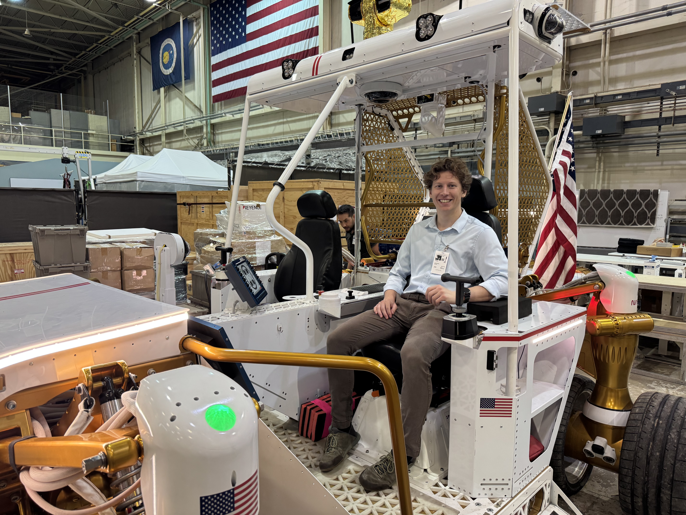
I am an electrical engineering graduate student at the University of Wyoming, where I also earned my B.S. in Computer Engineering. My primary interests are embedded systems, sensor integration, and CAD, with a broader interest in robotics and the development of electromechanical systems.
As part of my graduate research, I have spent the past few years working on a USSF sponsored project focused on the design and development of an underactuated robotic gripper for non-cooperative objects. Working on the project from the initial concepts and prototypes through continued development has given me experience across mechanical design, embedded programming, sensor selection and integration, electronics, and experimental testing.
I particularly enjoy hands-on projects that combine these areas, especially designing a system in CAD, developing the embedded software and electronics needed to operate it, and integrating sensors to make the system work reliably. I am especially interested in opportunities involving aerospace and space robotics, while also being interested in medical robotics and other applications of intelligent robotic systems.
Education
Areas of Interest
Embedded Systems
Microcontrollers, firmware, real-time systems, and hardware/software integration.
Sensor Integration
Sensor selection, electrical interfaces, calibration, data acquisition, and physical integration.
Robotics
Robotic manipulation, sensing, actuators, kinematics, and electromechanical systems.
Projects and Research
Soft Adaptive Robotic Gripper
Designed and developed a tendon-driven, underactuated robotic gripper for grasping objects in challenging and remote environments. Developed the mechanical system from the initial concept through multiple design iterations, including finger geometry, flexure joints, tendon actuation, and integrated mechanical components. Designed the three-finger architecture with independent motor actuation and underactuated joints to accommodate small errors in object pose during grasping.
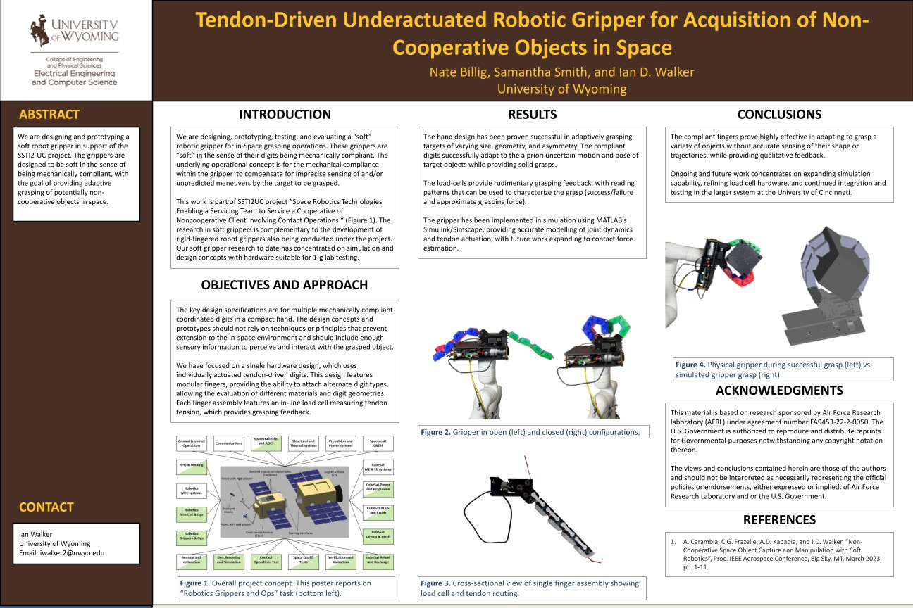
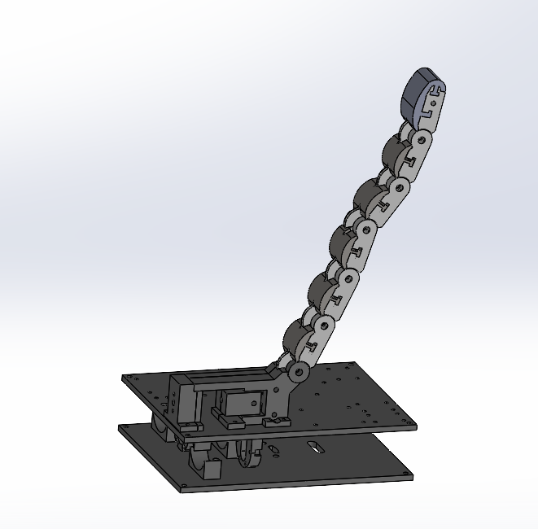
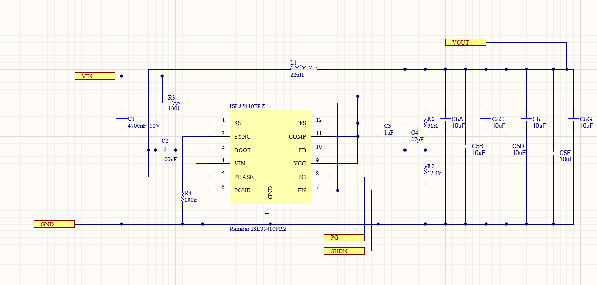
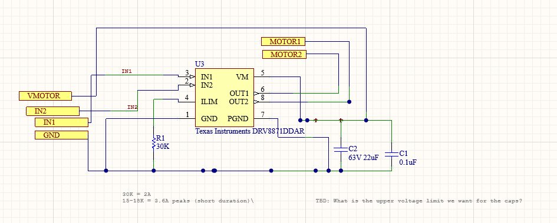
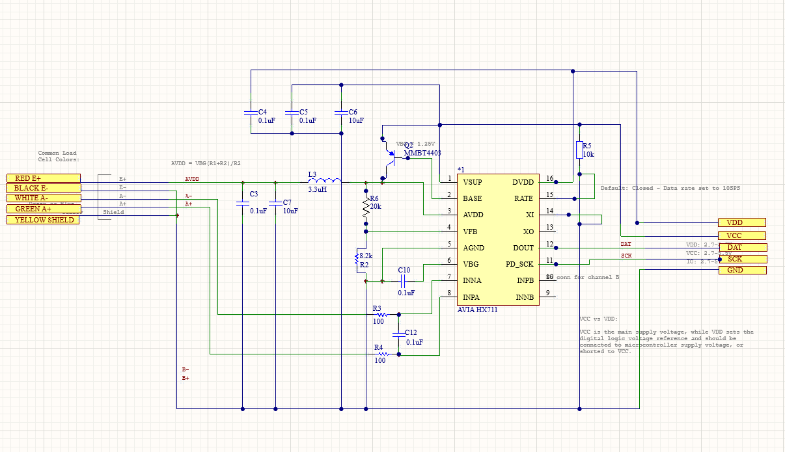
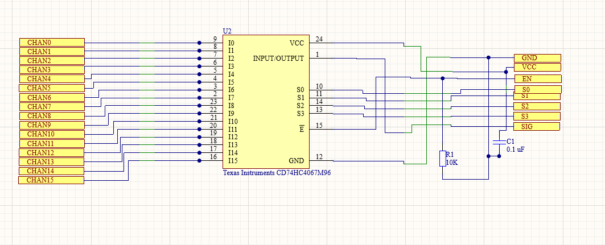
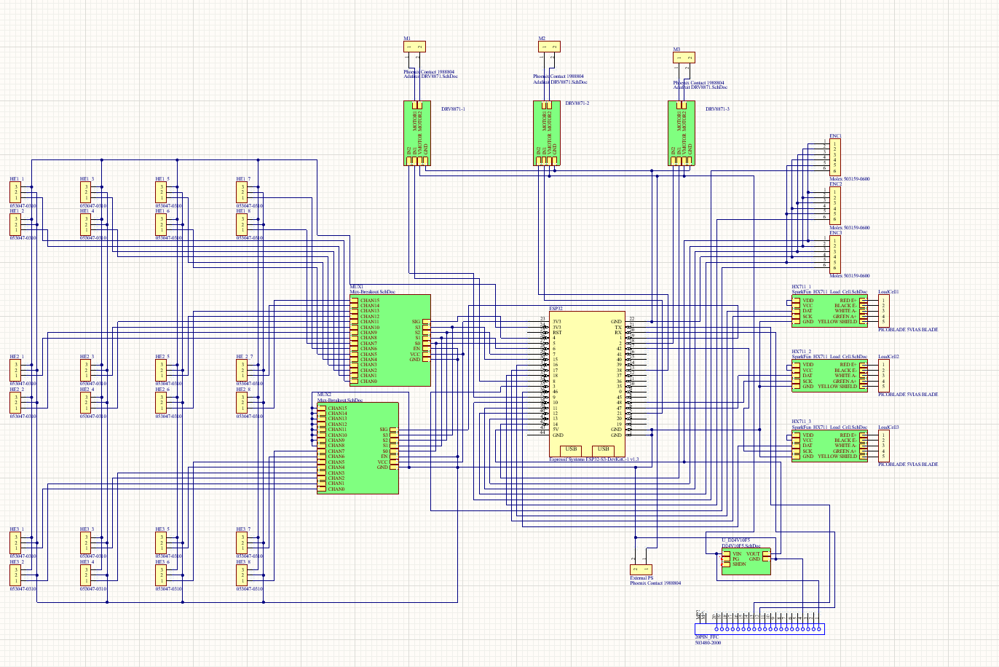
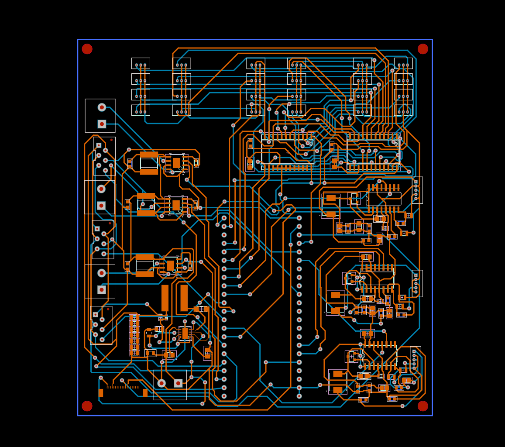
Hall-Effect Sensor Live Integration
Designed and integrated a Hall-effect sensing system for real-time finger joint-angle feedback. Developed the sensor and magnet configuration, integrated the components directly into the mechanical joints, and designed custom PCB electronics and embedded software for data acquisition. Iterated on sensor placement and mechanical packaging to achieve usable and repeatable measurements within the limited space of the gripper.
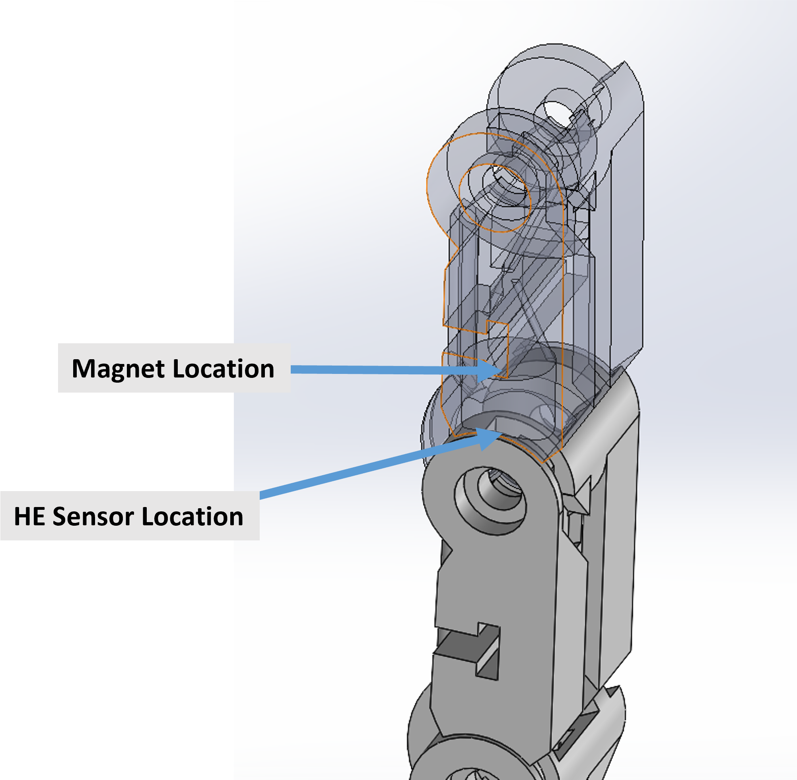
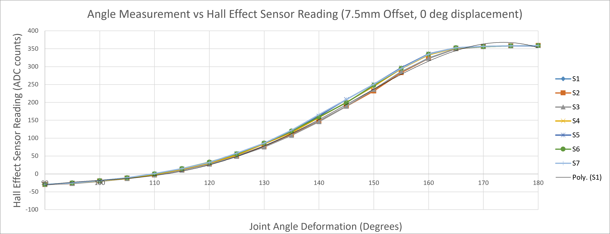
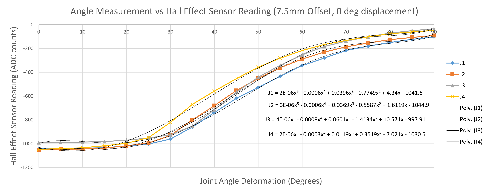
Contact Force Simulation
Developed a simulation model to reproduce the observed kinematic behavior of the physical gripper and evaluate its motion during grasping. The model was used to compare simulated and experimental joint movements while estimating contact forces at the finger contact pads based on the simulated configuration.
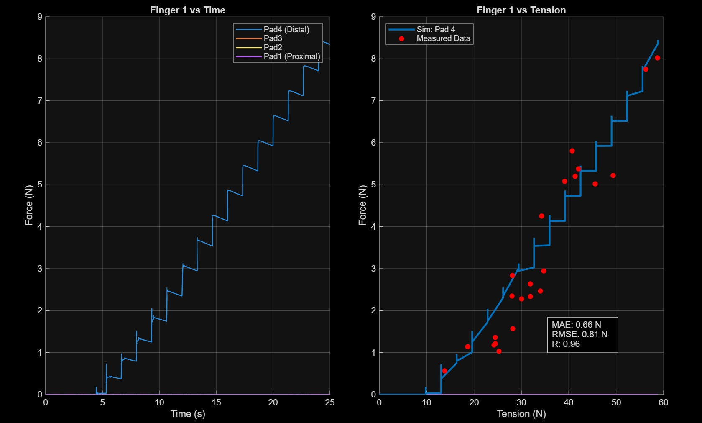
Digital Twin Recreation
Recreated the physical gripper as a digital model to represent its mechanical structure and motion in simulation. Developed the digital representation to support visualization, system analysis, and comparison between the physical prototype and its simulated behavior.
Multi-Agent Continuum Arm Q-Learning
Implemented a multi-agent reinforcement learning approach for coordinated control of a continuum arm. The project explored state discretization, Q-learning, and coordinated actuator behavior.

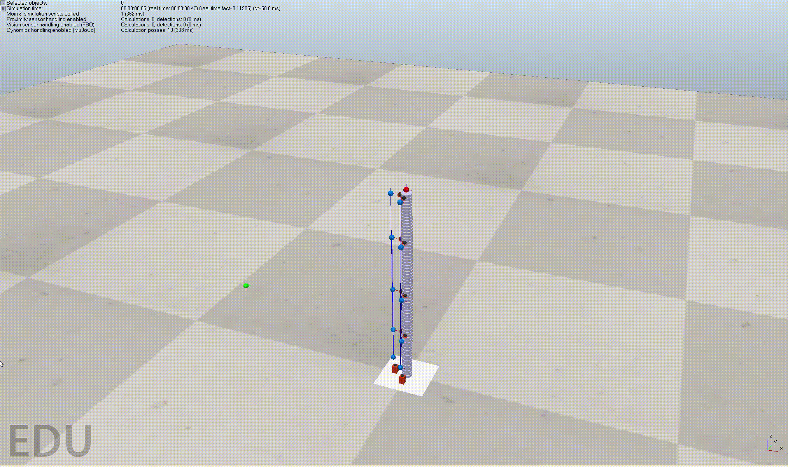
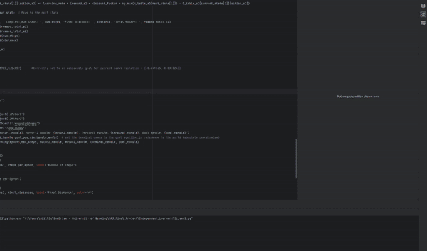
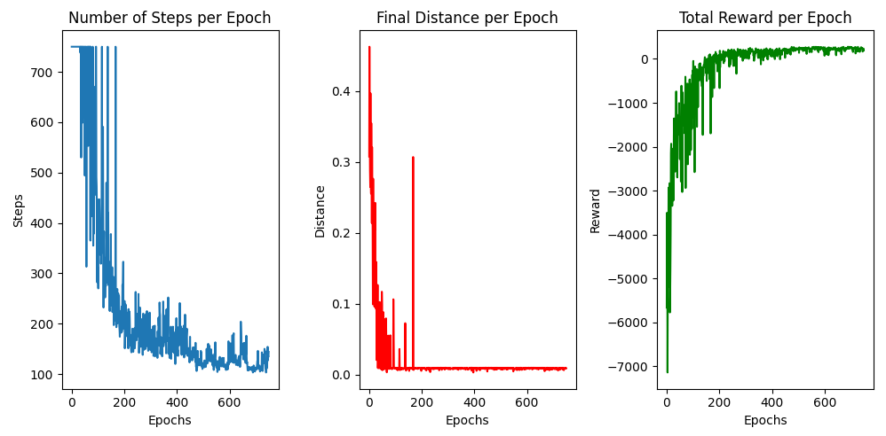
Cobot Path Planning
Developed a path planning algorithm for a drone swarm and evaluated the resulting motion through simulation.
SNAD — Tripping Hazard Detection
Senior design project using a Raspberry Pi 4 and camera to provide real-time computer vision assistance. A convolutional neural network classified whether a scene contained a potential tripping hazard and alerted the user when one was detected.

Research
Underactuated Robotic Grippers for Non-Cooperative Object Grasping
Research focused on adaptive grasping for objects that are not fixed to a supporting surface, with emphasis on gripper design, sensing, simulation, and experimental evaluation.
Upcoming at IEEE SMC 2026
Technical Skills
Robotics
Robot arms, grippers, actuators, sensors, path planning
Embedded
ESP32, Raspberry Pi, microcontrollers, serial communication
Design
CAD, PCB design, electrical schematics, mechanical design
Simulation
MATLAB, Simscape, system modeling, digital twins
Programming
C/C++, Python, MATLAB
Machine Learning
Q-learning, CNNs, computer vision
Contact
I am interested in opportunities involving embedded systems, sensor integration, robotics, and electromechanical system design, particularly in aerospace, space, and medical applications.